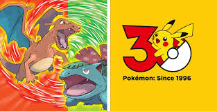
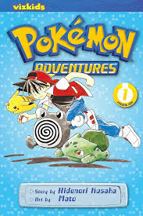

What is a Pokemon?
Pokemon are name the of the creatures from the popular game series, Pokemon. These these pokemon come in all different shapes and sizes. They can have up to two of pokemons 18 different types and can come from pokemons many different regions. Each pokemon species has a unique spread of stats determining its strengths and weaknesses. They also have different abilities and move sets that can vary wildly from one pokemon evolutionary line to the next.
Pokemon Games
Pokemon started with the games Pocket Monsters: Red and Green first released February 27, 1996. These to games were never released outside of Japan. An international version of these games was released based of the less buggy Japanese release, Blue, which were named Pokemon: Red and Blue. There is a total of 38 main line Pokemon games. The only one of those games not released outside of Japan in Pokemon Green version. The lastest entry to the series is Pokemon Legends: Z-A. There is also a multitude of spin off games.

Pokemon Anime
The Pokemon anime first aired April 1, 1997 in Japan. It first aired in the U.S. September 8, 1998. The main protagonist of the anime until January 13, 2023 was Ash Ketchum. He traveled across the many regions in Pokemon along side his main partner Pikachu and friends he made along the way. He was succeeded as the protagonist by the trainers, Liko and Roy. It is unkown when these new protagonist journey will end at this time.
Pokemon Manga
The main pokemon manga is called Pokemon Adventures. These books align fairly closely with the games plot and where first released in August 1997. These books are well know by Pokemon fans as being a little... unhinged compared to the anime and games.
